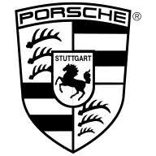

info@vancore.io

Für eine optimale Darstellung betrachten Sie unsere Website bitte im Hochformat.
info@vancore.io
Fokus
Fokus
Verbindung von strategischem Denken und Organisationsexpertise.
Gemeinsam setzen wir Veränderungen um, die Bestand haben.
Haltung
Haltung
Interaktive Workshopformate und Einbeziehung von Führungskräften und Experten.
Struktur
Struktur
Frühzeitige Abstimmung und bewusste Kommunikation.
Analytische Stringenz und kritisches Hinterfragen.
Verbindung von strategischem Denken und Organisationsexpertise.
Gemeinsam setzen wir Veränderungen um, die Bestand haben.
Interaktive Workshopformate und Einbeziehung von Führungskräften und Experten.
Frühzeitige Abstimmung und bewusste Kommunikation.
Analytische Stringenz und kritisches Hinterfragen.
Peter Schwarzenbauer
als Mitglied des Vorstands
Audi AG
Jürgen Bock
als Bereichsleiter Unternehmens- und Kulturentwicklung
Otto GmbH & Co. KG
„Statt wie die großen Strategie- und Managementberater vorgefertigte, unternehmensfremde Konzepte über dem Management auszugießen, verfolgt Vancore einen einfach nachvollziehbaren, sehr effektiven Ansatz, der das Management aus sich selbst heraus kreativiert und zu einer gemeinsamen Sicht auf notwendige Strategieanpassungen leitet.“
Luka Mucic, Finanzvorstand, SAP SE
„Ihnen ist es wunderbar gelungen, sich in kürzester Zeit in unsere Kultur und Abläufe hineinzudenken und mit viel Feingespür für Thema und Mensch die entscheidenden Handlungsfelder herauszuarbeiten.“
Karl-Heinz Johnen, Geschäftsführer Vertrieb, Marketing und Personal, Zentis GmbH & Co. KG
„Eines der wichtigsten Ergebnisse und ein klares Resultat des Vancore Ansatzes und Prozesses: Mein innerer Führungskreis wurde zu einem starken Team, das mit einer Stimme spricht.“
Klaus Berning, als Vorstand Vertrieb und Marketing, Porsche AG
„Ihr seid doch die Softfact-Fuzzies für die Weicheier.“
als Bereichsleiter BMW Group, heute Vorstand eines anderen großen Automobilherstellers
Reinhard Vanhöfen, CEO
Grundsteinleger und Möglichmacher
Transformator und Empath
Kultivator und Moderator
Haltung: Es ist nie zu spät, einen Baum zu pflanzen!
Martin Moog, CEO
Zwei Welten: Business & Musik
Zwei Methoden: Struktur & Improvisation
Zwei Instrumente: Strategie & Saxophon
Ein Ziel: Make it work
Kevin Bruns
Gründungen. Projektmanagement. Digitale Tools.
Erst springen. Den Fallschirm baut man – dann – im freien Fall.
Probleme lösen wie Bouldern: Ein kleiner Erfolg nach dem nächsten.
Man sollte jeden Tag etwas machen, das Mut erfordert.
Michael Esser
Dramaturgie, Storytelling, Inszenierung
Fragt, um was es geht.
Fragt dann, ob es auch tatsächlich so ist.
Kennt Methoden die sicherstellen, dass man so verstanden wird, wie man verstanden werden
will ...
Mark Fourman
Mathematiker, Practice Leader, Change Manager
Large multi-national companies, cross-functional, cross-cultural
Based in USA, Asia, South America
Motto: Organizational development must directly support strategic objectives
Christian Friedrich
Jemand hat ein Problem. Jemand hat eine Lösungsidee.
Jemand hat ein Ziel. Jemand hilft, es zu erreichen.
Jemand hat ein Projekt. Jemand hilft, es zielsicher umzusetzen.
Weiß als ehemaliger Handball-Profi, dass der Spieler für den Ball
verantwortlich ist, bis der andere ihn gefangen hat.
Dr. Wolfgang Grimme
Familie, Hof, Tiere.
Consulting, Strategie, Realisation.
Davor: Berufssoldat, Doktorarbeit, Kommunalpolitiker.
Kennt die Strukturen hinter den Strukturen. Weiß, wie man Ideen auf die Straße bringt.
Hugo Gstrein & Jakob Rheinländer
Zusammen: GWW – studio for brand excitement
Begeisterung kann man nicht vortäuschen. Aber wenn man sich traut,
nach ihr zu suchen, kann man sie finden.
Die Reise ist oft anstrengend und sie ist es immer wert. Denn nur wer
begeistert ist, begeistert.
Identity / Big Ideas / Creative Productions
Dirk H Horn
Leadership, Organisationsentwicklung, Teamdynamik
Musik, Luftfahrt, Automobil, Pharmazie,
360-Grad-Coach, Transformation Expert, Kulturwandler
Mission: Expansion Nord-Amerika
Marc Röllich
Project Management Officer, Wortakrobat, Bergfreund
Querdenker mit einem Faible für Nachhaltigkeit
Beherrscht die Tricks und Kniffe der PR;
bringt komplexe Themen auf den Punkt
Erwin Teichmann
Berater für Kommunikation, freier Journalist, Pressesprecher
Executive Communications, Change Communications, Employer Communications
Motto: Kommunikation - Reputation - Nachhaltigkeit
Hilde Maartje Thiele
Systematik, Realität, Yoga
Office Management, Projektmanagement, Projektplanung
In der Welt zu Hause, Ruhepol, auf dem Rücken der Pferde ...
Sonja Wegner
Historikerin, Wortarbeiterin, Schwimmerin
Mit vielen Wassern gewaschen, interessiert sie besonders wie Menschen (gut) zusammen
arbeiten - Unternehmenskultur - und wie man Dinge verändern kann - Change
Management
Einer Meinung mit Erich Kästner: Es gibt nichts Gutes, außer man tut es!
Daniel B. Werner
Digital Business Expert, Leadership Developer, Executive Business Coach
Lifestyle: Digital Native – es gibt für alles eine Lösung, Outdoor – es gibt immer einen
Weg, Surfen – es gibt immer eine nächste Welle
Axiom: Erfolg ist ein Dreiklang. Seine Dimensionen sind klare Kommunikation, klares
Denken, klare Handlungen.
Andrea Castronovo
Leiter Vertriebsstrategie, Planung, Steuerung & Future Retail
BMW Group
Heiko Gloge
Managing Director
IGEL Technology GmbH
Ja oder nein. Antworten sind häufig simpel. Der Prozess dahin nicht. Viele Faktoren müssen in
einer komplexen Welt berücksichtigt werden – ganz zu schweigen von den individuellen
Bedürfnissen der Menschen.
Wir stellen die richtigen Fragen und entwickeln mit Ihnen große Ziele, die in kleinen Schritten
umsetzbar sind. Nur Entscheidungen, die Ihr Führungsteam gemeinsam erkämpft, können wirklich
etwas verändern.
Fokus – Strategien und Geschäftsmodelle
Dialoge, Moderation, Strategie Audits, Entwicklung und Steuerung von Strategien, Neue
Geschäftsmodelle, Innovationsprozesse
Haltung – Mensch und Wandel
Unternehmenskultur und Marke, Coaching, Change Management und Kommunikation, Führung,
Personalentwicklung, Trainingskonzepte
Struktur – Organisation und Zusammenarbeit
Programm-/Projektmanagement, Agile Arbeitsmethoden, Organisationsentwicklung, Brücke zur
Digitalisierung, Performance Management
Was ist BASICS?
BASICS ist ein mehrstufiger analytischer Prozess und steht für
Baseline | Assumptions | Strategy | Implications | Commitment | Sustainability.
Mit dem BASICS-Tool schätzen Sie Ihre strategische Fitness in ca. 15 Minuten realistisch ein.
Sie erkennen grundlegende Schritte des strategischen Entscheidungsprozesses und können in Zukunft
effektiver agieren.
Was bringen Ihnen bessere Entscheidungen?
Wayne Griffiths
Vorstand Vertrieb und Marketing
SEAT S.A.
Sven Schuwirth
Leiter Markenentwicklung und Digitalisierung
Audi AG
Kalbacher Hauptstraße 37
60437 Frankfurt am Main
Deutschland
Tel. +49 69 50929979-0
Fax. +49 69 50929979-9
Bogenstraße 45d
20144 Hamburg
Deutschland
Tel. +49 40 60940985-0
Fax. +49 40 60940985-9